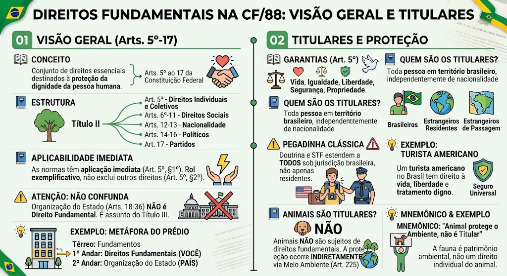

Material de estudo: Visão Geral dos Direitos Fundamentais
Material complementar · Ver fonte no GitHub
Direitos Fundamentais — Visão Geral
Conceito
Conjunto de direitos essenciais destinados à proteção da dignidade da pessoa humana, previstos nos Arts. 5º ao 17 da Constituição Federal.
Estrutura Fundamental (Arts. 5º–17)
A CF/88 dedica o Título II (Dos Direitos e Garantias Fundamentais) aos seguintes capítulos:
- Art. 5º – Direitos e deveres individuais e coletivos
- Arts. 6º a 11 – Direitos sociais
- Arts. 12 e 13 – Direitos de nacionalidade
- Arts. 14 a 16 – Direitos políticos
- Art. 17 – Partidos políticos
Classificação dos Direitos Fundamentais
Os direitos fundamentais se dividem em quatro grandes grupos:
- Direitos individuais e coletivos – Art. 5º (ex.: vida, liberdade, igualdade, propriedade)
- Direitos sociais – Arts. 6º a 11 (ex.: educação, saúde, trabalho, moradia)
- Direitos de nacionalidade – Arts. 12 e 13 (quem é brasileiro, naturalização)
- Direitos políticos – Arts. 14 a 16 (voto, sufrágio, elegibilidade)
- Partidos políticos – Art. 17 (organização e funcionamento)
Aplicabilidade Imediata
As normas definidoras de direitos fundamentais têm aplicação imediata (Art. 5º, §1º). Isso significa que, mesmo sem regulamentação, os direitos já produzem efeitos.
O Art. 5º é rol exemplificativo — não exclui outros direitos decorrentes do regime e dos princípios constitucionais (Art. 5º, §2º).
Eficácia Vertical e Horizontal
Os direitos fundamentais vinculam, em primeiro lugar, o Estado (eficácia vertical) – todas as esferas de poder devem respeitá-los.
Há também a eficácia horizontal (ou privada): em certas relações entre particulares, os direitos fundamentais também produzem efeitos, especialmente nas relações de poder privado (ex.: empresas, associações), com base na teoria da eficácia direta ou indireta.
Colisão de Direitos e Proporcionalidade
Quando dois ou mais direitos fundamentais entram em conflito (ex.: liberdade de expressão x direito à intimidade), utiliza-se a técnica da ponderação e o princípio da proporcionalidade – avaliando se a restrição a um direito é adequada, necessária e proporcional em sentido estrito para proteger o outro.
Garantias Fundamentais (Remédios Constitucionais)
As garantias são mecanismos processuais para proteger os direitos fundamentais. Os principais:
- Habeas corpus (Art. 5º, LXVIII) – liberdade de locomoção
- Mandado de segurança (LXIX, LXX) – direito líquido e certo
- Mandado de injunção (LXXI) – falta de norma regulamentadora
- Habeas data (LXXII) – acesso a informações pessoais
- Ação popular (LXXIII) – anular ato lesivo ao patrimônio público
Tratados Internacionais de Direitos Humanos
Os tratados e convenções sobre direitos humanos que forem aprovados, em cada Casa do Congresso, por quórum qualificado (3/5), serão equivalentes a emendas constitucionais (Art. 5º, §3º).
Os demais tratados têm hierarquia supralegal (inferior à CF, superior à legislação ordinária), conforme entendimento do STF.
Dimensões/Gerações dos Direitos
Os direitos fundamentais evoluíram historicamente em dimensões:
- 1ª Dimensão – direitos civis e políticos (liberdade, propriedade, voto) – Estado abstencionista.
- 2ª Dimensão – direitos sociais, econômicos e culturais (educação, saúde, trabalho) – Estado prestacional.
- 3ª Dimensão – direitos de solidariedade (meio ambiente, paz, desenvolvimento) – titularidade coletiva.
- 4ª Dimensão – direitos decorrentes da globalização e biotecnologia (ex.: proteção de dados, manipulação genética).
⚠️ Cuidado com a Organização do Estado
A Organização do Estado (Arts. 18 a 36) NÃO está dentro dos Direitos Fundamentais. É assunto do Título III (Organização do Estado), não do Título II.
Erro comum de prova: misturar os dois blocos.
Para Leigos – A Metáfora do Prédio
Pense na Constituição como um grande prédio:
- Térreo: Fundamentos (por que o Brasil existe)
- 1º Andar: Direitos Fundamentais (o que VOCÊ tem direito) – é aqui que estamos!
- 2º Andar: Organização do Estado (como funcionam União, Estados, Municípios)
⚠️ Não confunda os andares — seus direitos pessoais (1º andar) são diferentes de como o país é organizado (2º andar)!
Direitos Fundamentais — Titulares
Direitos garantidos (Art. 5º)
Todos são iguais perante a lei, garantindo-se:
- Vida
- Igualdade
- Liberdade
- Segurança
- Propriedade
🧠 MNEMÔNICO: "VILSP" — Vida, Igualdade, Liberdade, Segurança, Propriedade.
Quem são os Titulares?
Toda pessoa que esteja em território brasileiro, independentemente de nacionalidade ou residência:
- Brasileiros (natos ou naturalizados)
- Estrangeiros residentes
- Estrangeiros de passagem (em trânsito)
⚠️ Pegadinha clássica: a banca afirma que estrangeiro não residente não tem direitos fundamentais. ERRADO. O Art. 5º, *caput*, garante a "brasileiros e estrangeiros residentes no País", mas a doutrina e a jurisprudência (STF) entendem que o termo "residentes" é utilizado no sentido de "pessoas que se encontram no País", abrangendo também os de passagem. Assim, qualquer pessoa sob jurisdição brasileira, ainda que em trânsito, é titular dos direitos fundamentais.
⚠️ Pegadinha: Estrangeiros não residentes
Muitas provas tentam confundir: "estrangeiro em trânsito não tem direitos fundamentais". Isso é falso. O STF e a doutrina majoritária garantem os direitos fundamentais a qualquer pessoa, nacional ou estrangeira, que esteja em território nacional, ainda que de passagem.
Para Leigos – Turista americano no Brasil
Imagine um turista americano no Brasil. Ele não mora aqui (não é residente), mas se for preso injustamente ou agredido pela polícia, tem os mesmos direitos que você! Não importa se é brasileiro ou estrangeiro, se está no Brasil, tem direito à vida, liberdade e tratamento digno. É como um "seguro universal" para todo ser humano em território brasileiro.
Pessoas Jurídicas são Titulares?
SIM, mas apenas dos direitos fundamentais compatíveis com sua natureza. Exemplos:
- Direito de propriedade
- Devido processo legal
- Liberdade de associação
- Sigilo bancário (quando aplicável)
Não podem titularizar direitos inerentes à pessoa física (ex.: vida, integridade física). A doutrina fala em titularidade atípica ou direitos fundamentais da pessoa jurídica.
Animais são Titulares?
NÃO. Animais não são sujeitos de direitos fundamentais. A proteção ocorre indiretamente, por meio da proteção ao meio ambiente (Art. 225 CF).
🧠 MNEMÔNICO: "Animal protege o Ambiente, não é Titular".
Exemplo prático – Animais
Seu cachorro não pode entrar na Justiça dizendo "estão violando meus direitos". Mas se alguém maltratar animais, isso é crime contra o meio ambiente (Art. 225 CF). A proteção existe, mas é indireta — protege a fauna como patrimônio ambiental, não como direito individual do cachorro.
Mapa-mental
